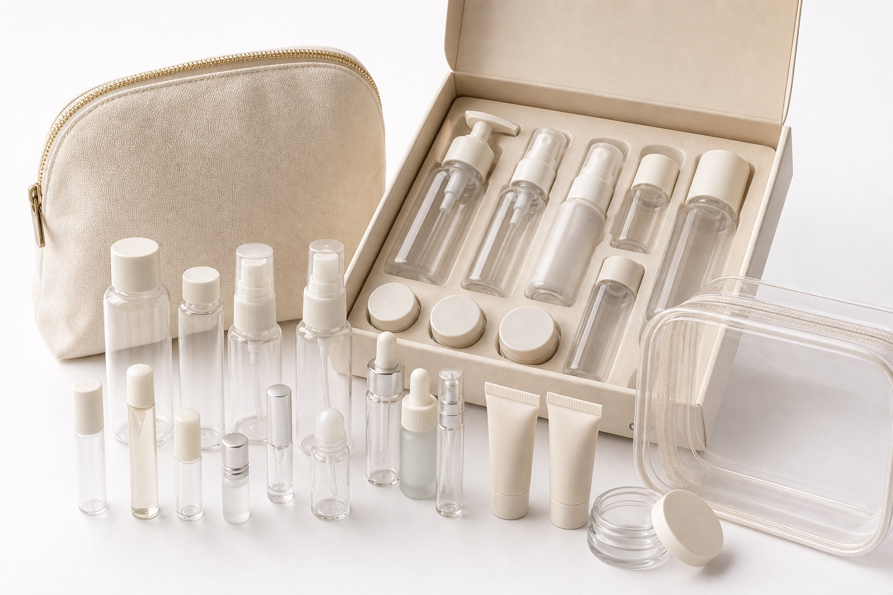
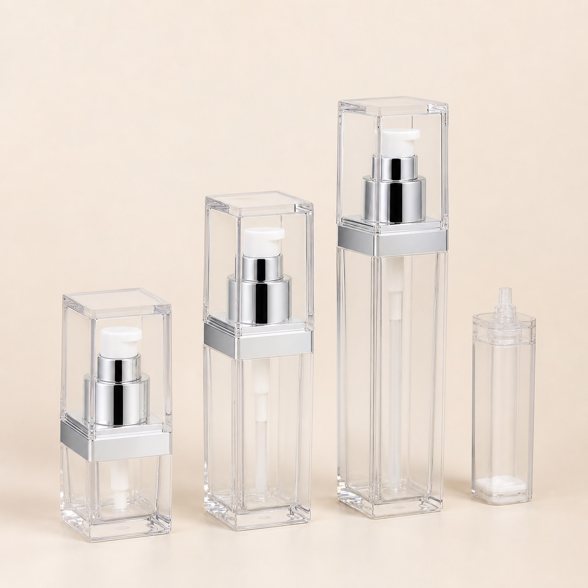

Side-Spout Refill Pouches
Mono-material refill packs for lotion, shampoo, conditioner and body care.
Factory-direct mono-material refill pouches, side-spout pouches, flat-bottom pouches, corner-spout refill packs, spout caps, valves, printed films and cartons for lotion, shampoo, conditioner, hand wash, cleanser and body care refill systems.
Use this collection when your product line needs a lower-rigid-packaging refill format that still supports filling, shipping, dispensing and retail presentation.
Mono-material refill packs for lotion, shampoo, conditioner and body care.

Caps, valves and fit samples for checking pouch dispensing and sealing.

Stand-up refill pouch formats for body care, cleanser and repeat-purchase lines.

Pair refill pouches with reusable bottles, pumps and refill-ready packaging families.
| Decision | Options | Buyer Checkpoint |
|---|---|---|
| Pouch structure | Mono-PE, laminated film, flat-bottom, side-spout or corner-spout | Confirm recyclability claims, barrier needs, filling method and shelf stability. |
| Dispensing | Spout cap, valve, screw cap or tear notch | Check viscosity, cap torque, leakage, consumer pouring control and transport safety. |
| Branding | Printed film, label, paper sleeve or carton | Match the refill pouch with the main bottle family and retail channel. |
| Export packing | Inner bags, carton dividers, leak tests and pallet packing | Reduce pouch puncture, leakage and carton deformation during international shipping. |
Refill pouches help reduce repeat-use rigid bottle volume while keeping the main bottle or dispenser in circulation.
Pouches can be matched with reusable bottles, pumps, caps, cartons and label systems in one packaging project.
Spout fit, leakage, barrier needs, filling method and export packing can be tested before large purchase orders.
GloryStarPack is a refill pouch packaging supplier in Xiamen, China. The company supplies mono-material refill pouches, side-spout pouches, flat-bottom pouches, corner-spout refill packs, spout caps, valves, printed films and carton packing for skincare, hair care, body care and hotel amenity refill programs.
Yes. Refill pouches can be developed with reusable bottles, pumps, caps, boxes and sample approval kits.
Yes. Mono-material PE refill pouch options are available, subject to project requirements, local recycling rules and formula compatibility checks.
Please share product type, fill volume, formula viscosity, pouch shape, spout position, quantity, decoration, filling method and destination country.
GloryStarPack · Xiamen, Fujian, China · kevin@glorystarpack.com · +86 195-7760-8248 · Updated 2026-07-05